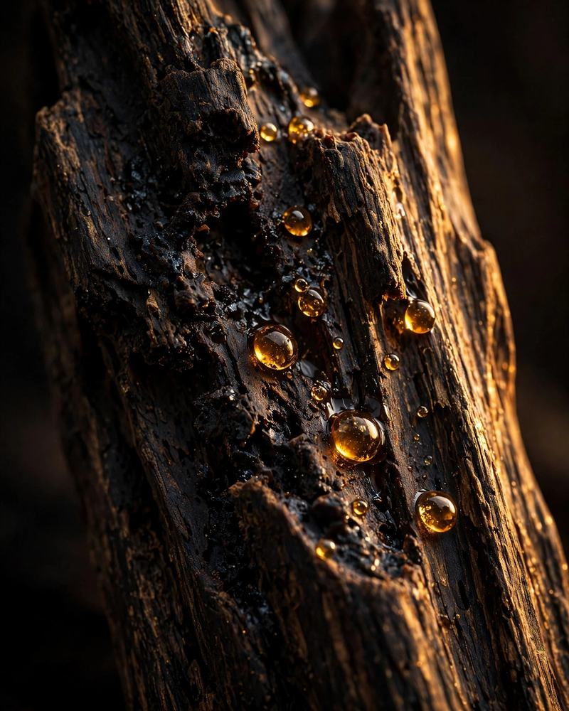

文莱料的香韵以醇厚、细腻为主，带一点清甜。室温下香味干净，上炉后层次分明，前调醇、尾调甜，没有杂味。
和加里曼丹的浓郁药香比，文莱料更细腻、更干净；和惠安系的清甜凉意比，文莱料更醇厚。处在中间的风格，是它突出的特点。
文莱料的油脂细腻，颜色棕褐，深浅过渡自然。好料油脂丰富，密度中等，香韵和油脂挂钩。
外观上，文莱料的木质纹理清楚，油脂和木质交错。太黑发亮、油线像画上去的，要警惕泡油和染色。
文莱国土面积小，沉香树的分布有限，产量一直不大。加上出口管理严格，市场上流通的文莱料不多。
产量小也意味着价格不便宜。文莱料的价格跨度同样很大，入门级的碎料和顶级的老料，价格能差很多倍。
第一，产区名不能当真假证明。证书只证明材质，不证明产地是文莱。溯源说不清的，先别买。
第二，文莱料有时会被其他星洲系料冒充。买之前问清楚产地，别为借来的名字付钱。
第三，亲自闻。细腻干净、醇厚带清甜是文莱料的常见风格，闻着发闷、单一甜香、带化学味的，先别买。
文莱料和加里曼丹料都是星洲系，差别在香韵的细腻程度：文莱料更细腻干净，加里曼丹料更浓郁厚重。喜欢清爽一点的选文莱，喜欢浓郁一点的选加里曼丹。
价格上，文莱料产量小，同规格下通常高于加里曼丹料。预算有限的话，先看加里曼丹料；追求细腻风格的话，可以看看文莱料。条件允许的话，两种碎料各买一点，对比着闻。
喜欢星洲系的醇厚、又不想要太浓重的人，文莱料是不错的选择。日常品香熏香，文莱料的细腻干净很合拍。
预算有限的话，不必非买文莱。加里曼丹、马来西亚的料香韵接近，选择更多，价格也更灵活。
| 看什么 | 文莱沉香常见表现 |
|---|---|
| 香韵 | 醇厚细腻，带一点清甜 |
| 油脂 | 油脂细腻，颜色棕褐 |
| 产量 | 产量小，流通不多 |
| 价格 | 跨度大，总体不便宜 |
| 适合 | 喜欢醇厚又不想要太浓重的人 |